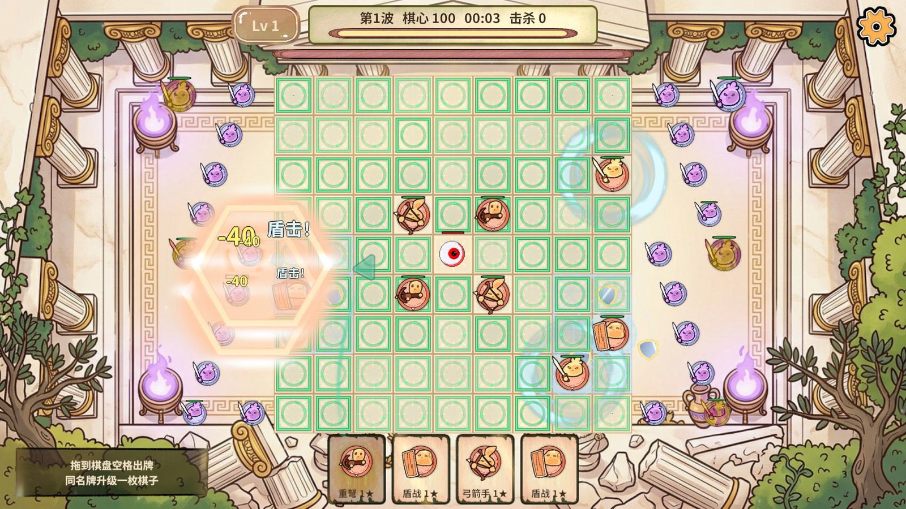
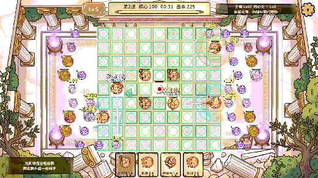
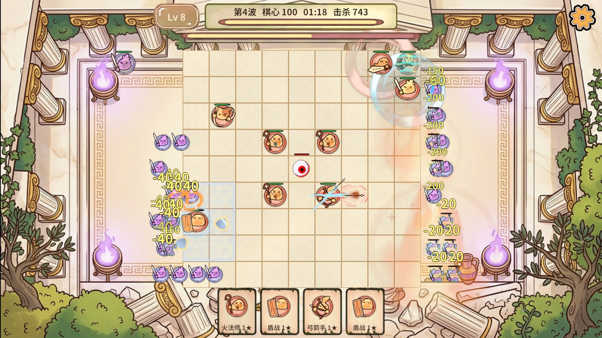
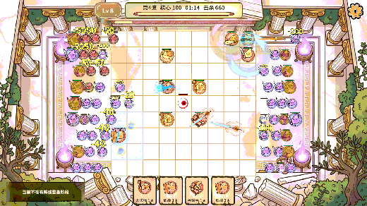
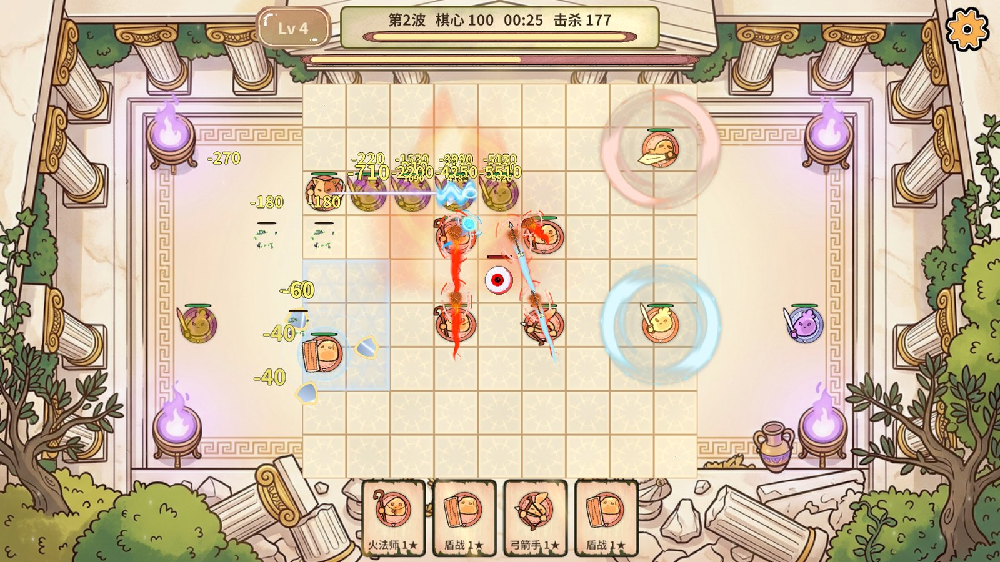
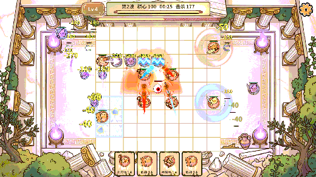

框架可行性：既有RevUI、RevPool、RevResManager、RevTask和独立无尽服务足以接入原生UGUI指针事件、DOTween弹性动画、共享Shader及按生命周期分包。本次未更改Revolution内核与前六章战斗架构。
最终行为与断言
| 项目 | 最终行为 | 证据 |
|---|---|---|
| 单卡升级 | 场上一个或多个同名未满星主力时，一张手牌只升级其中一个，星级提高一级；场上其他棋子保留。空格出牌随机选择，拖到同名棋子可指定目标。 | 单卡规则9项通过；两个同名棋子升级后仍有两个，非法动作不扣牌、不改随机源或占格。 |
| 占格与继承 | 升级始终占1格；保留Id、位置、演员计时、复活状态、攻击倍率，生命按原比例继承。最高3星，只有满星同名时可在空格新增棋子，直接投满星目标拒绝。 | ECS回归9项通过，包含80格、单格升星、存档与盘外Boss预算；驻守/突刺等回归28项通过。 |
| 弹性曲线拖曳 | 原手牌不移动。UGUI事件转画布坐标，三次贝塞尔48段丝带与真实箭头尖组成102顶点网格；DOTween OutElastic伸展、指数跟手、InBack收回。 | 10张真实截图；曲率/可见性/同图集页/卡牌固定断言通过，松手消费1次。最终生命周期修正后再次入场可拖，棋心松手消费0次。 |
| 火焰排序 | 无尽火焰透明倍率0.38，排序7，关闭外框与地面格线；杂兵排序8，弹幕原排序30。池对象下次租约恢复原排序。 | 实战累计火焰243→267，实际渲染属性均正确；长剑气82→88；反馈未超过既有表现预算。截图可见敌人和弹幕。 |
| 长型剑气 | Kenney trace_07改为水平透明刃光，Shader叠加逐段展开、亮芯、速度细束与末端闪光；沿真实攻击射线播放0.4秒。 | 实战有真实突刺反馈；隔离横向四目标夹具调用真正AssassinThrust，actualDamage/newReceipt均为true，并有截图。 |
| 资源与编辑器 | 原HUD/Arena预制体GUID保留，CLI固定配方装配；箭头独立EndlessCardArrow V2图集与AB，随无尽进入加载、退出释放。剑气Default采样纹理按规范不当Sprite打图集。 | 70个PC包构建并发布；18图集/286图片唯一覆盖；AB问题门禁canBuild=true，errors/shared/circular/mapErrors为空。字库1711字符可用。 |
| 收尾 | RevMCP常驻stdio连接；重载后重新发现注册表，完整GM进入隔离局，rev_run执行业务断言和finally。 | 所有交付运行success=true；Home、IsTransitioning=false、Logic=0、EnemyCapacity=0、池清空。Unity停止Play，StartScene干净且保持打开。 |
真实画面






截图仅缩放压缩，不裁剪、不拼接、不美化。原始机器证据保留在忽略目录 .codex/work/endless-cards-vfx/，报告不生成ZIP或Profiler录制文件。
实际调用顺序
- 显式连接 Revolution.RevMCP/rev_mcp.py --project RevGame.Unity --reports .codex/work/endless-cards-vfx/mcp serve，复用同一个stdio会话。
- rev_discover：编辑态缺运行时能力如实返回unavailable；编译/Play重载后再发现endless.*共32个动作，完整GM“无尽/进入测试局”实际存在。
- rev_call：editor.play(scene=Assets/Scenes/StartScene.unity)；GM“无尽/进入测试局”；endless.state等待transitioning=false、screen=Endless。game.background.status实际abMode=true（其text=未运行仅指背景专项夹具，本次未执行该夹具）。
- rev_run：单卡/曲线验收、最终10帧连拍、火焰实战12帧连拍、横向真实突刺预览，以及最后两次入场的手牌复用回归。每个计划都有finally撤销手势、返回大厅并检查Logic=0。
- CLI live：game.endless.interaction装配资源；ab.build(target=StandaloneWindows64)、game.endless.publish；game.resources.validate、ab.issues与字体校验。编辑器资产操作串行，不启动第二个Unity。
- rev_call(editor.stop)；scene.list确认StartScene dirty=false，playing=false。未执行独立Player、IL2CPP和手机真机测试。
复现入口：单卡与再次入场拖放计划、真实突刺视觉夹具计划。运行前从StartScene冷启动真实AB模式，重新执行rev_discover确认注册，再交给rev_run。
素材与实现依据
Kenney Particle Pack、UI Pack，随原包保留CC0许可及原图。下载镜像为 Particle Pack 与 UI Pack；原作者页面请求被拒绝时使用作者发布镜像。箭头源图按有效Alpha裁切；粒子原图黑底转为亮度Alpha及白色RGB，避免Shader出现黑色长方块。
弹性参数依据 DOTween官方文档 的OutElastic与SetUpdate；曲线使用标准三次贝塞尔公式，末端切线控制尖头朝向。丝带/箭头尖属于变形图形，不适用底板九宫格；HUD已有底板继续使用现有Sliced图片。
排错记录与验证边界
- 初次模拟拖曳使用Transform位置而非卡牌Rect中心，射线落在槽边缘：改为Rect中心，真实UGUI命中断言通过。
- 最初自定义Graphic未带CanvasRenderer，Tween运行但不提交可见网格：添加RequireComponent和CLI配方兜底，验证102顶点实际提交。
- 粒子源图Alpha全255、黑底不透明：改为亮度Alpha，实际剑气截图消除黑色方块。
- 面板关闭显式解绑/停Tween，重开重绑；用成功与非法两次拖放检查复用。第二指针不能抢走现有手势。
火焰实战计划内endless.start曾返回accepted=false，因为局已处于Fighting；报告以实际Fighting和累计火焰/突刺反馈增加为证，未将这次拒绝当作启动成功。AB门禁仍有既有大写文件名与单资源包建议，不能宣称全部warning=0。
本次指针由EventSystem模拟，非操作系统鼠标或手机触屏。截图与工具调用会污染Editor整帧性能数据；未使用这些样本承诺零GC、极限优化或手机帧率。前六章未做全流程回归，共享表现默认参数保持原有值，并在每次效果租约恢复默认排序。